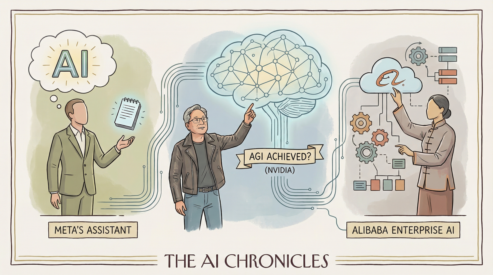

Anthropic推出 Claude 新功能，可利用电脑完成任务
两克伴AIGC日报
2026-03-24 星期二

本期关注：Anthropic表示，Claude现在可以使用您的电脑为您完成AI代理推送任务 - CNBC、推动开源AI发展，英伟达向Kubernetes社区捐赠GPU动态资源分配驱动程序、封杀、追捧与3800亿估值：Anthropic2026奇幻漂流、比Google的传输协议快10倍，他要给8000亿Agent修高速公路｜AI Founder 请回答
📰 行业动态
NVIDIA向Kubernetes社区捐赠GPU动态资源分配驱动程序
Anthropic2026年估值达3800亿，探讨AI产业未来图景
AI创始人提出为Agent构建专用互联网基础设施
华为云高管胡维琦将加入MiniMax，聚焦B端业务及中国区市场
🔥 今日焦点
近日，全球科技圈掀起了一股“AI打工潮”。一只名为OpenClaw的“龙虾”AI，凭借其读写本地文件、自主操控桌面应用的能力，将复杂任务拆解，为人类分担工作。然而，对于海外中小企业和个人创业者而言，他们面临的是更为复杂的商业经营挑战。阿里针对这一痛点，推出了首个企业级AI Agent——Accio Work。
Accio Work专为海外中小企业和个人创业者打造，旨在解决他们在时差沟通、选品数据、多平台运营、供应链谈判等方面的难题。与个人AI不同，Accio Work专注于商业经营，具备强大的开放能力和安全性能，无需懂代码即可轻松上手。
Show HN：ProofShot – Give AI coding agents eyes to verify the UI they build
ProofShot是一款由jberthom开发的CLI工具，旨在为AI编码代理赋予验证所构建用户界面（UI）的能力。该工具的核心功能是允许AI代理在浏览器中打开页面，与之交互，记录交互过程，并收集任何错误信息。随后，ProofShot将视频、截图和日志等所有信息打包成一个自包含的HTML文件，便于用户快速审查。
📚 深度长文
Anthropic的Claude AI系统迎来了一项重大更新，其核心观点在于赋予用户对AI的远程控制能力。文章详细阐述了Claude如何通过这一更新，让用户能够更灵活地管理和操作AI，从而提高工作效率和体验。关键论据包括Claude的远程控制功能如何简化用户界面，增强用户对AI的交互性，以及如何通过优化资源利用来释放计算机空间。
阅读这篇文章，AI从业者可以了解到Claude的最新发展动态，以及如何利用这些技术优势来提升自身的工作效率。文章深度剖析了远程控制技术的独特见解，揭示了其在AI领域的应用潜力。此外，文章还提供了关于如何使用Claude释放计算机空间的实用技巧，这对于资源有限的环境尤其有价值。
📄 重点论文
**核心贡献**: 提出了一种名为ProMAS的主动错误预测方法，用于多智能体系统，通过马尔可夫转移动力学来预测和防止系统故障。
**与AI Agent的关联**: 该方法有助于提高多智能体系统的鲁棒性和可靠性，对多智能体系统的设计和应用有重要价值。
**核心贡献**: 提出了一种低延迟的LLM驱动的多模态交互框架，用于Pepper机器人，优化了语音到文本和文本到语音的转换流程，并充分利用了LLM的多模态感知和控制能力。
**与AI Agent的关联**: 该框架为LLM在社交机器人中的应用提供了新的思路，有助于提升机器人的交互能力和用户体验。
**核心贡献**: 将Transformer上下文窗口形式化为I/O页面，证明了具有索引外部记忆的工具增强智能体在检索成本上比仅限于顺序扫描的智能体有指数级的降低。
**与AI Agent的关联**: 该研究为智能体的外部推理提供了新的理论框架，有助于提升智能体的推理能力和效率。
🛠️ 产品推荐
该产品是一款基于本地硬件构建的永久性陪伴型智能代理。它利用Rust运行时、qwen2.5:14b在Ollama上进行快速本地推理，并结合模型级联和云模型，实现语义回忆。该代理通过SQLite内存和本地嵌入（nomic-embed-text）跨会话进行语义回忆。产品核心功能包括24/7运行、监控交易机器人、检查邮件、部署网站以及通过任务运行器将重任务委托给Claude Code。产品创新点在于强调内存架构的重要性，通过混合回忆（BM25关键词搜索与向量嵌入）提高语义回忆效果，为用户解决复杂任务和提升效率提供有力支持。
---
RSAC 2026 Conference即将到来，SecurityWeek发布预览摘要。1Password推出1Password Unified Access，统一访问平台，助力企业安全部署AI代理。Bonfy发布Adaptive Content Security (ACS) 2.0，数据安全平台，监控和控制AI代理、copilots及未授权AI工具对敏感数据的访问和处理。Onapsis宣布Agentic Gateway，SAP网络安全AI，通过自然语言查询与安全合规数据交互。这些产品旨在解决企业AI应用中的安全挑战，提升数据保护能力，助力企业安全、高效地实现智能化转型。
---
Oracle全新升级其金融与采购软件，引入嵌入式AI智能代理。该产品通过自动化发票录入、数据搜集与规划等日常任务，释放人力，助力企业专注于战略决策。AI智能代理的引入，旨在让用户通过提问驱动系统，实现数据自动检索，大幅提升工作效率。Oracle Fusion套件凭借其创新AI能力，为企业提供高效、智能的财务与采购解决方案。